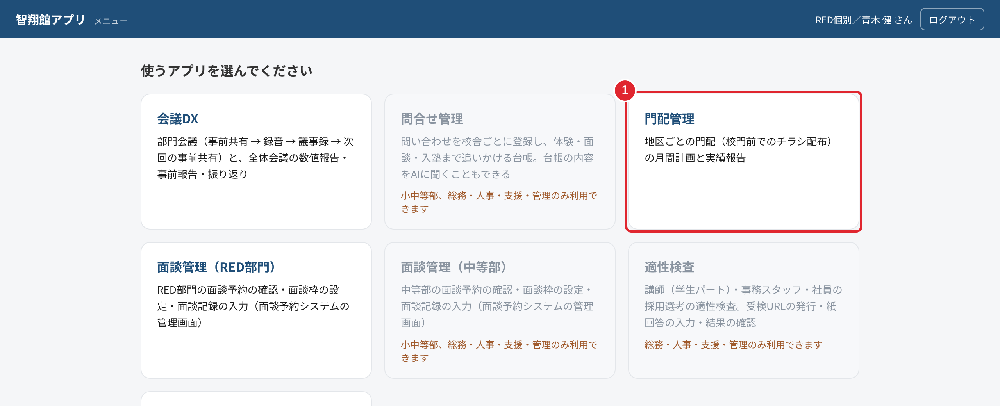
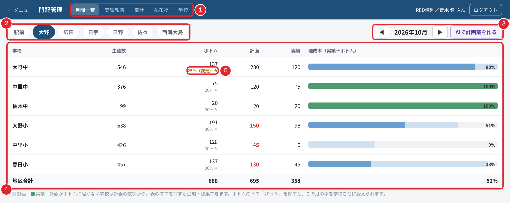
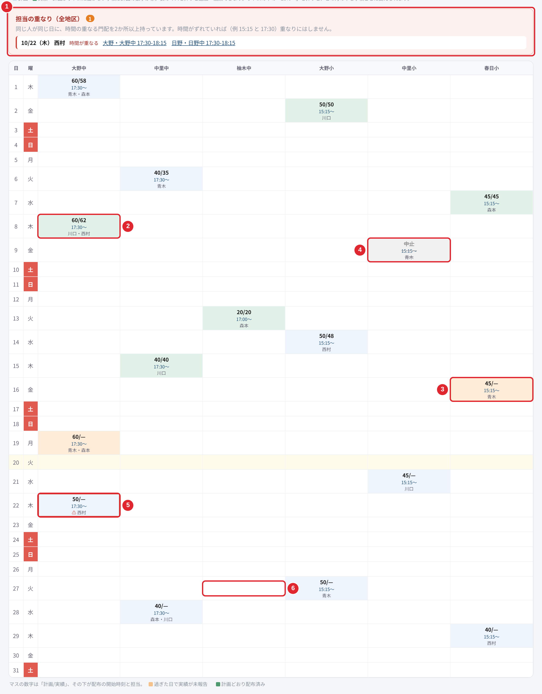
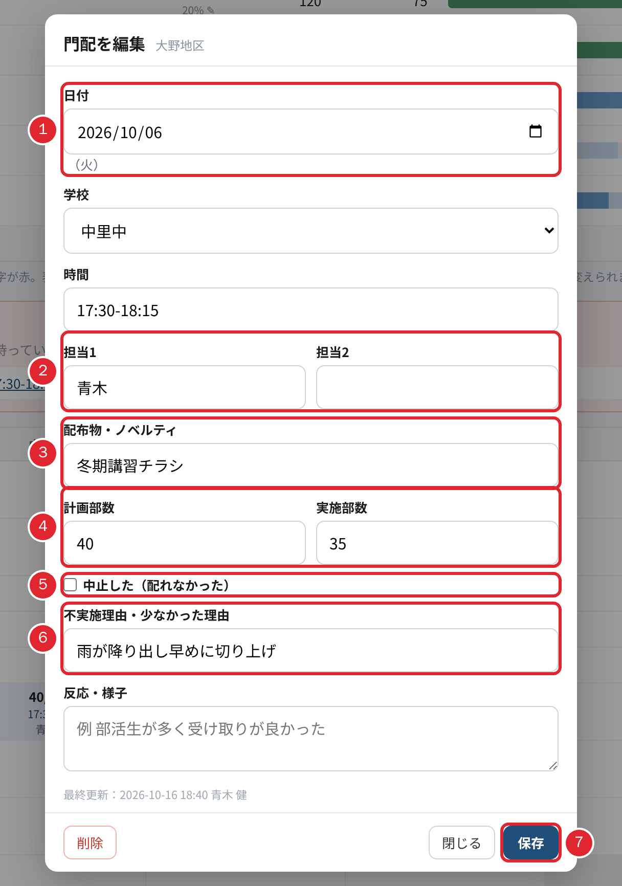
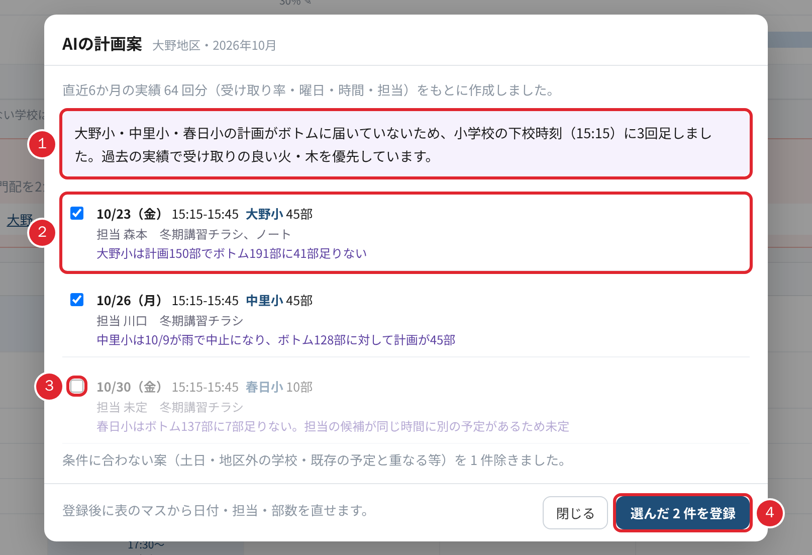
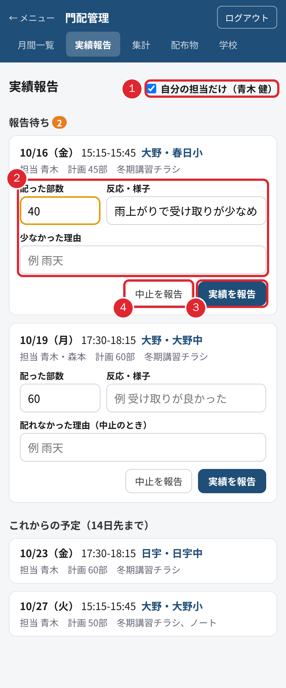
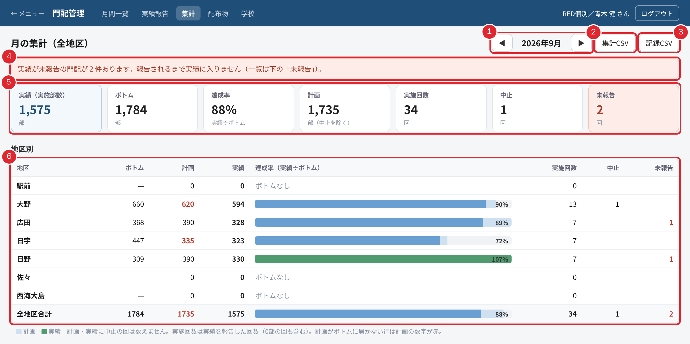
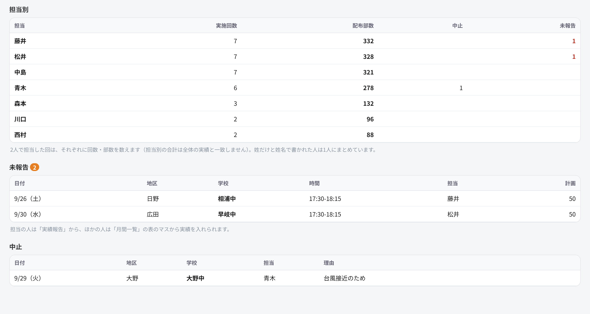
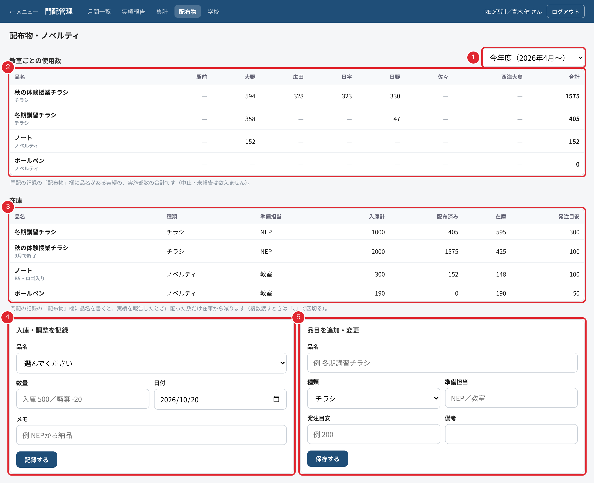
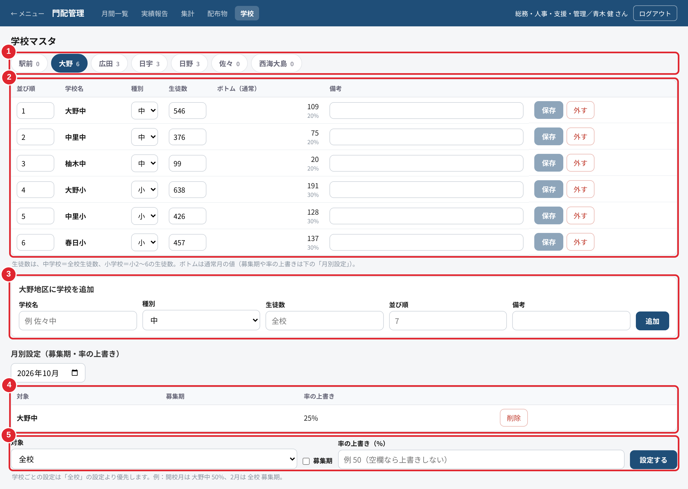

株式会社智翔館 社内向け
門配管理 操作マニュアル
門配（校門前でのチラシ・ノベルティの配布）の月間計画・実績報告・集計と、配布物の在庫・学校マスタの使い方をまとめた手引きです。画面の写真に付けた赤い番号（1）は、本文の同じ番号の説明に対応しています。
- 対象
- 門配を計画・担当する職員、集計・在庫を管理する職員
- アプリ
- 智翔館アプリ › 門配管理（バージョン v0.18.0 時点）
- 最新版
- ヘルプデスクの「マニュアル」タブからダウンロードできます
- 作成
- 2026年10月
※ 写真に写っている担当者名・部数・在庫などの数値は、説明のために用意した架空の例です。AIの計画案の文面も例で、実際の案は地区の実績によって変わります。
1-1門配管理でできること
門配は、次の4つをくり返します。
- 月のはじめ計画月間一覧で、学校ごとの日付・担当・部数を決める
- 当日配布校門前でチラシ・ノベルティを配る
- 配ったら実績報告スマートフォンで、配った部数と様子を入れる
- 月の終わり集計地区・学校・担当ごとの達成率を確かめる
↻ 集計で足りなかった学校を、次の月の計画に生かします
| 画面（上のタブ） | 使う場面 | 説明 |
|---|
| 月間一覧 | 計画を立てる・見渡す | 第2章 |
| 実績報告 | 配ったあと（スマートフォン） | 第3章 |
| 集計 | 月の実績報告・会議資料 | 4-1 |
| 配布物 | チラシ・ノベルティの在庫と使用数 | 4-2 |
| 学校 | 学校・生徒数・募集期の設定 | 4-3 |
1-2ボトム（最低配布数）の考え方
学校ごとに「その月に最低これだけは配る」という部数をボトムと呼びます。ボトムは生徒数 × 率で、アプリが自動で計算します。
| 学校 | 生徒数として数える人数 | 通常の月の率 | 募集期の率 |
|---|
| 中学校 | 全校生徒数 | 20% | 60% |
| 小学校 | 小2〜小6の生徒数 | 30% | 60% |
例：生徒数 546人の中学校なら、通常の月のボトムは 546 × 20% ＝ 109部です。
達成率は「実績（実際に配った部数）÷ ボトム」です。計画の段階で計画部数がボトムに届いていない学校は、数字が赤で表示されます。
ポイント
- 募集期の月や、開校した月など、率を変えたいときは「学校」の画面の月別設定で変えます（4-3）。1校だけその月の率を変えるときは、月間一覧からも変えられます（2-5）。
- 中止した回は、計画にも実績にも数えません。
1-3門配管理を開く
智翔館アプリにログインすると、使うアプリを選ぶメニュー画面が出ます。「門配管理」（1）を押して開きます。門配管理は全部門の職員が使えます。

図1 メニュー画面
門配管理の画面の上には、「月間一覧・実績報告・集計・配布物・学校」の5つのタブが並びます（図2 の 1）。左上の「← メニュー」でメニュー画面に戻ります。共用のパソコンでは、使い終わったら右上のログアウトを押してください。
2-1月間一覧の画面の見方

図2 月間一覧（上）
- 1
画面のタブ
月間一覧・実績報告・集計・配布物・学校を切り替えます。いま開いている画面は明るく表示されます。
- 2
地区の切り替え
駅前・大野・広田・日宇・日野・佐々・西海大島の7地区です。押した地区の学校が表に並びます。最後に見た地区は、次に開いたときも選ばれたままです（端末ごと）。
- 3
月の切り替え・AIで計画案を作る◀▶で前の月・次の月に移ります。別の月を見ているときは
今月で戻れます。
AIで計画案を作るは
2-4。
- 4
学校ごとの集計表
学校ごとに、生徒数・ボトム・計画・実績・達成率が並びます。棒グラフは、薄い色が計画、濃い色が実績です（実績がボトムに届くと緑）。計画がボトムに届かない学校は、計画の数字が赤になります。一番下の「地区合計」は地区全体の数字です。
- 5
ボトムの率ボトムの下の「20% ✎」は、その学校のこの月の率です。押すと率を変えられます（
2-5）。率を変えた学校は「（変更）」と色付きで出ます。
2-2日付 × 学校の表の見方
集計表の下に、縦に日付、横に学校を並べた表があります。マスの数字は「計画/実績」（例 60/58 は、60部の計画で58部配った）、その下が配布の開始時刻と担当です。まだ実績が無いマスは「60/—」のように出ます。

図3 月間一覧（日付 × 学校の表）
- 1
担当の重なり同じ人が同じ日に、時間の重なる門配を2か所以上持っていると出ます（
2-6）。重なりが無ければ出ません。
- 2
緑のマス：計画どおり（計画以上）配り終えた門配です。
- 3
オレンジのマス：日付が過ぎたのに、実績がまだ報告されていない門配です。担当の人は実績報告をお願いします（
第3章）。
- 4
灰色のマス（中止）：雨などで中止した門配です。計画・実績には数えません。
- 5
⚠ の付いたマス：担当の予定が、ほかの門配と時間が重なっています。
- 6
空いているマス：押すと、その日・その学校の門配を追加できます（
2-3）。
そのほかの色：青いマスはこれからの予定、または計画より少なく配った門配です。黄色い行は今日、赤い曜日は土曜・日曜です。
2-3門配を追加する・直す
表のマスを押すと、門配の入力画面が開きます。空いているマスなら「門配を追加」、予定の入ったマスならその門配の「門配を編集」になります。1つのマスに2件以上あるときは、先に一覧が出るので、直したいものを押します（＋ 追加でもう1件足せます）。

図4 門配の入力画面
日付を選びます（1）。曜日が横に出ます。学校と時間（例 16:00-17:00）も入れます。
担当1・担当2を入れます（2）。入れ始めると職員の名前の候補が出ます。2人で行くときは担当2にも入れます。
配布物・ノベルティを入れます（
3）。「配布物」画面に登録した品名が候補に出ます。2つ以上渡すときは「冬期講習チラシ、ノート」のように「、」で区切ります。ここに書いた品名の在庫が、実績の部数だけ減ります（
4-2）。
計画部数を入れます（4）。実施部数は配ったあとに入れます。計画の段階では空けておきます。
保存を押します（7）。表のマスに反映されます。
配れなかったときは「中止した（配れなかった）」にチェックを入れ（5）、不実施理由（例 雨天、学校行事で下校時刻変更）を入れます（6）。理由の欄は、中止にしたときと、実施部数が計画部数より少ないときに出ます。反応・様子には、受け取りの様子など次の計画に役立つことを書いておきます。
ポイント
- 入力画面の一番下に、最後に直した日時と人が出ます。
- 予定そのものを取り消すときは、左下の削除を押します。雨などで配れなかったときは、削除せずに「中止」にしてください（集計の中止の一覧に残ります）。
- 中止にしたときは、不実施理由を入れないと保存できません。
2-4AIで計画案を作る
月のはじめに、地区の計画をAIに下書きさせることができます。地区と月を選んでから、右上のAIで計画案を作るを押します。

図5 AIの計画案
- 1
案の考え方
どの学校が足りないので、何を足したかの説明です。その上の行に、何か月分の実績をもとに作ったかが出ます。
- 2
案1件
日付・時間・学校・部数・担当・配布物と、その案を出した理由です。
- 3
チェック
登録したくない案は、チェックを外します（薄く表示されます）。
- 4
選んだ ○ 件を登録
チェックの付いた案だけが、表に予定として登録されます。
AIの案について
- 直近6か月の実績（受け取りの多い曜日・時間・担当）と、いまの計画とボトムの差をもとに作ります。押しただけでは何も登録されません。
- 担当は、その地区で門配をしたことがある人の中から選びます。ほかの地区の予定と時間が重なる人や、ふさわしい人がいないときは「未定」になります。
- 土日・地区外の学校・すでにある予定と重なる案などは、自動で除かれます（除いた件数が下に出ます）。
- 登録したあとは、表のマスから日付・担当・部数を直せます。担当が「未定」の予定は、必ず担当を入れてください。
2-5ボトムの率をこの月だけ変える
集計表のボトムの下にある「20% ✎」（図2 の 5）を押すと、その学校のこの月の率を入れる欄が出ます。
率（%）を入れて保存を押します（Enter キーでも保存できます）。ボトムがすぐに計算し直されます。
元の率に戻すときは既定、やめるときは×を押します。
ここで変えた率は、「学校」画面の月別設定（4-3）にも同じものとして入ります。
2-6担当の重なりを直す
全地区の予定を見比べて、同じ人が同じ日に時間の重なる門配を持っていると、表の上に「担当の重なり（全地区）」が出ます（図3 の 1）。いま見ている地区に関係するものが上に並びます。
- 時間が重なる：両方の時間が書かれていて、重なっています。
- 時間未定のため要確認：どちらかの時間が空欄で、重なっているか分かりません。時間を入れてください。
並んでいる「地区・学校 時間」のリンクを押すと、その地区に切り替わり、その門配の入力画面が開きます。担当か時間を直して保存すると、知らせは消えます。15:15 と 17:30 のように時間がずれていれば、同じ日に2か所担当しても重なりにはなりません。
3-1実績報告の画面（スマートフォン）
上のタブの「実績報告」を押します。自分が担当の門配が、次の3つに分かれて並びます。

図6 実績報告（スマートフォン）
- 報告待ち：今日までの門配で、まだ実績を入れていないもの。件数が横に出ます。
- これからの予定（14日先まで）：これから担当する門配の日時・学校・部数・配布物。
- 最近の報告（1週間）：この1週間に報告したもの（報告が無いときは出ません）。
- 1
自分の担当だけ
チェックを外すと、ほかの人の担当も含めた全員分が並びます。代わりに報告するときに使います。
- 2
入力欄配った部数・反応・様子・理由を入れます（
3-2）。
- 3
実績を報告
- 4
ポイント
担当者は、名前（姓だけでも可）で見分けています。月間一覧の担当の欄に自分の名前が入っていないと、ここに出ません。
3-2配った部数を報告する
報告待ちのカードの配った部数を確かめます。最初は計画部数が入っているので、違うときだけ直します。
反応・様子（例 部活生が多く受け取りが良かった）を入れます（任意）。
計画より少なかったときは、少なかった理由（例 雨が降り出し早めに切り上げ）を入れます。
実績を報告を押します。カードが「最近の報告」に移れば完了です。
3-3中止を報告する
雨天や学校行事などで配れなかったときは、配れなかった理由（例 雨天）を入れてから中止を報告を押します。理由が空のままでは報告できません。中止にした門配は、集計の「中止」の一覧に理由と一緒に載ります。
報告は忘れずに
- 報告されるまで、その門配は実績に入りません。月間一覧ではオレンジのマスになり、集計の「未報告」に載ります。
- 報告したあとで部数を直すときは、月間一覧の表のマスから直します（2-3）。
3-4担当以外の人が入れるとき
担当の人の代わりに入れるときは、次のどちらかで入れられます。
- 実績報告の画面で「自分の担当だけ」のチェックを外し、その門配のカードから報告する。
- 月間一覧の表のマスを押し、入力画面の実施部数を入れて保存を押す。
4-1月の集計を見る・CSVで保存する
上のタブの「集計」を押すと、全地区の1か月分の門配がまとめて出ます。終わった月を見ることが多いので、先月から開きます。数え方は月間一覧の集計表と同じです。

図7 月の集計（上）
- 1
月の切り替え
◀▶で月を移ります。先月で先月に戻ります。
- 2
集計CSV
地区・学校ごとの集計（ボトム・計画・実績・達成率・回数）を CSV ファイルで保存します。Excel でそのまま開けます。
- 3
記録CSV
この月の門配の記録を、1件1行で保存します（日付・地区・学校・担当・部数・理由・反応など）。
- 4
未報告の知らせ
実績が未報告の門配があると出ます。報告されるまで実績に入らないので、会議の資料にする前に報告を集めてください。
- 5
全地区の数字
実績（実施部数）・ボトム・達成率・計画・実施回数・中止・未報告です。
- 6
地区別の表
地区ごとの数字です。実施回数は実績を報告した回数（0部の回も含む）です。
下に向かって、学校別・担当別・未報告・中止の表が続きます。

図8 月の集計（担当別・未報告・中止）
- 担当別：担当ごとの実施回数・配布部数です。2人で担当した回はそれぞれに数えるので、担当別の合計は全体の実績と一致しません。
- 未報告：日付が過ぎたのに実績が無い門配の一覧です。担当の人に報告を頼んでください。
- 中止：中止した門配と、その理由です。
4-2配布物・ノベルティの在庫
上のタブの「配布物」を押します。チラシやノベルティの品目ごとに、教室（地区）ごとの使用数と在庫が分かります。

図9 配布物・ノベルティ
- 1
期間
使用数を数える期間です。「今年度（4月〜）」か、1か月ずつを選べます。
- 2
教室ごとの使用数
門配の記録の「配布物」欄に品名がある実績の、実施部数の合計です（中止・未報告は数えません）。品目に登録していない品名が書かれていると「品目に未登録」と出ます。
- 3
在庫
在庫 ＝ 入庫計 − 配布済み です。実績を報告すると、配布物の欄に書いた品目から自動で減ります。在庫が発注目安を下回ると、画面の上に「残りわずか」と出て、数字が赤になります。準備担当に手配を頼んでください。
- 4
入庫・調整を記録
納品されたときは、品名を選び、数量（例 500）・日付・メモ（例 NEPから納品）を入れて記録するを押します。廃棄や数え直しで減らすときは、数量をマイナス（例 −20）で入れます。記録したものは下の「最近の入出庫」に並びます。
- 5
品目を追加・変更
新しいチラシ・ノベルティを使うときに登録します。品名・種類（チラシ／ノベルティ／その他）・準備担当・発注目安・備考を入れて保存するを押します。登録済みの品名を入れると、その品目の内容が出て、直して保存できます。
ポイント
在庫を正しく減らすには、門配の記録の「配布物」欄に、ここに登録したのと同じ品名を書いてください（入力画面では候補から選べます）。
4-3学校マスタと月別設定
上のタブの「学校」を押すと、地区ごとの学校と生徒数、月ごとの率の設定が出ます。学校の追加・変更ができるのは総務・人事・支援・管理の部門だけです。ほかの部門の人には「閲覧のみです」と出るので、変更は管理部門に依頼してください。

図10 学校マスタ（管理部門の画面）
- 1
地区のタブ
地区名の横の数字は、登録されている学校の数です。
- 2
学校の一覧
並び順（月間一覧で左から並ぶ順）・種別（中／小）・生徒数・備考を直して保存を押します。外すで一覧から外します（過去の門配の記録は残ります）。ボトム（通常）は通常の月の値です。
- 3
学校を追加
学校名・種別・生徒数・並び順・備考を入れて追加を押します。生徒数は、中学校は全校生徒数、小学校は小2〜小6の生徒数です。
- 4
月別設定の一覧
上の月の欄で選んだ月の設定です。削除で設定を消すと、通常の率に戻ります。
- 5
月別設定を追加
対象（全校、または1校）を選び、募集期にチェックを入れるか、率の上書き（%）を入れて設定するを押します。
設定の例
- 2月は全校が募集期：対象「全校」・募集期にチェック（率は中学校・小学校とも60%）。
- 開校した月の大野中だけ50%：対象「大野・大野中」・率の上書き 50。
- 学校ごとの設定は、「全校」の設定より優先します。
4-4困ったとき
| こんなとき | 確かめること |
|---|
| 実績報告に自分の担当が出ない | 月間一覧で、その門配の担当の欄に自分の名前（姓だけでも可）が入っているか確かめてください。日付が15日以上先の予定はまだ出ません。 |
| 「○○地区の学校がまだ登録されていません」と出る | その地区の学校が学校マスタにありません。管理部門に追加を依頼してください（4-3）。 |
| マスがオレンジのまま | 実績が報告されていません。実績報告か、マスの入力画面で実施部数を入れてください。 |
| 在庫が減らない | 門配の記録の「配布物」欄の品名が、配布物の画面に登録した品名と同じか確かめてください。未報告・中止の回は減りません。 |
| 保存できない | 入力画面に出ている赤い文字を確かめてください（中止のときは不実施理由が必要です）。直らないときは、ヘルプデスクの「ご意見・不具合の報告」から、画面の写真を添えて知らせてください。 |